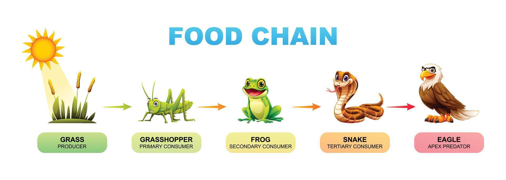
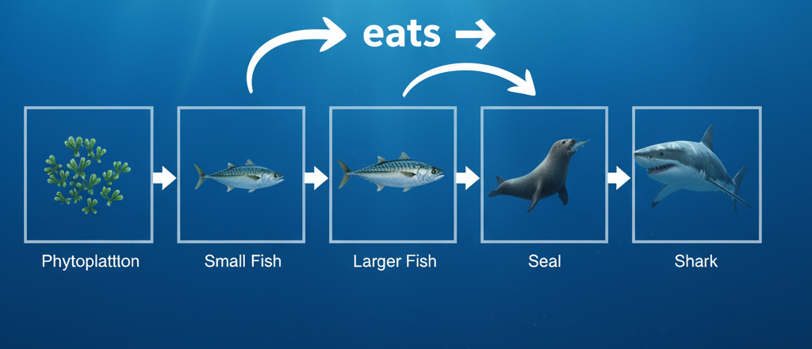

Understanding the Food Chain
The food chain in animals shows how energy is transferred from one organism to another. It starts with producers (plants) and moves up to herbivores, carnivores, and top predators.
- Producers: Grass, algae, and other plants
- Primary Consumers: Herbivores like rabbits, deer, and zebras
- Secondary Consumers: Carnivores like snakes, foxes, and birds
- Tertiary Consumers: Top predators like lions, eagles, and sharks
Examples of Food Chains
Example 1: Grass → Grasshopper → Frog → Snake → Hawk
Example 2: Phytoplankton → Small Fish → Larger Fish → Seal → Shark
